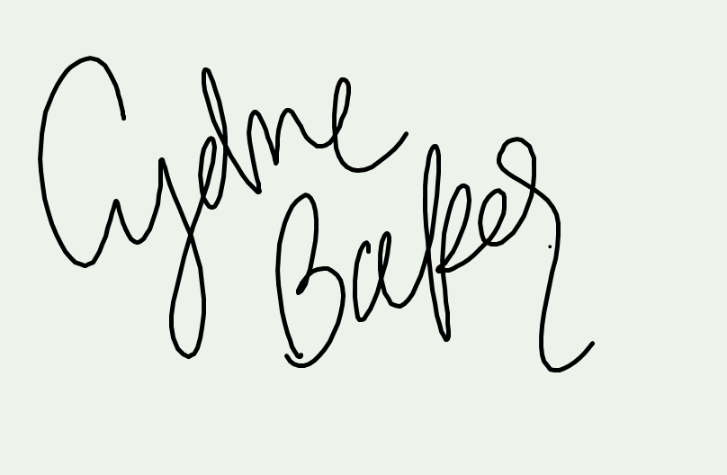
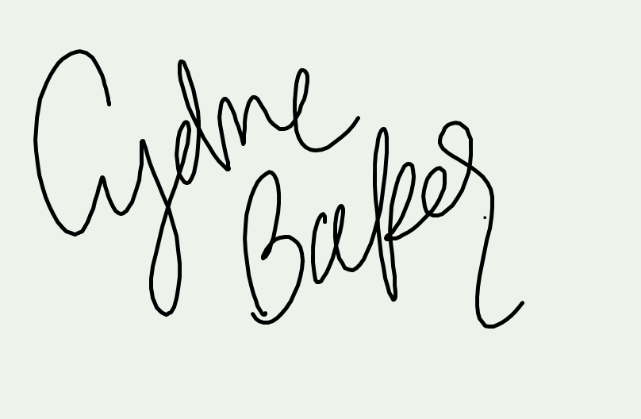

Hello, My name is Cydne Baker thank you for viting my site. Here are somethings you should know about me. I am currently a student at Brigham Young University. I am hoping to major in Experience Design and Management. I hope to one day own my own venue and community center. I love helping others have good experiences and I hope that my efforts can help everyone feel welcomed.
My favorite thing to do is play soccer every week. I have been playing since I was 8 years old, and even had the unique opportunity to play at Southern Virginia University as a center midfield and forward. I love to coach soccer and was able to coach Karl G. Maesers JV Highscool girls soccer team. If I am not playing soccer you can usually find me working, studying, or hanging with family and friends. My siblings are my best friends and we enjoy doing everthing together.
Check out my latest video below.
I would love to chat and tell you more. Here is my contact information below. I'll message you back as soon as possible.
janedoe@email.com | (801) 555-5555